कृषी अन्न विपणन मंडळ
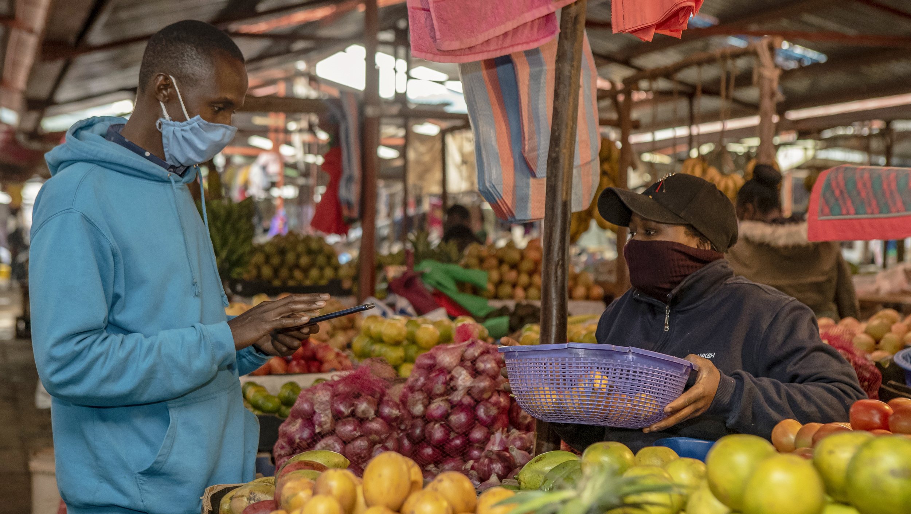
महाराष्ट्र राज्य राज्य कृषी बाजारपेठ
1. विपणन संचालनालय (डीओएम)
2. आगमन आणि किंमत माहिती
3. शेतकरी उत्पादक कंपन्या
4. कृषी पानन मित्र मासिका (केपीएम)
5. एपीएमसी प्रोफाइल
6. खरेदीदार विक्रेता माहिती
पुण्यातील शेतकरी बाजारपेठा
विमान नगर शेतकरी बाजार

विमान नगरातील कॉफी जार जवळील मोकळ्या भूखंडावर दर गुरुवारी होस्ट केलेल्या या शेतकर्याच्या बाजारपेठेत 20 हून अधिक स्टॉल्स आहेत. वाघोलीच्या पुढे छोट्या खेड्यांमधील शेतकरी या स्टॉल्सवर आहेत. या बाजारात आपणास विविध वस्तू विकणारे शेतकरी आढळतील. आपण भाज्या, फळे, कडधान्य, फरसान्स, वाळलेल्या मासे, गावठी अंडी (आकारात लहान आणि प्रथिने जास्त असलेले) आणि बरेच काही शोधू शकता. दर गुरुवारी, हा बाजार संध्याकाळी चारच्या सुमारास सुरू होईल आणि रात्री 10 वाजेपर्यंत समाप्त होईल. आपण आपल्या स्वत: च्या पिशव्या घेऊन जाण्याचा सल्ला दिला जातो.
येरवडा शेतकरी बाजार
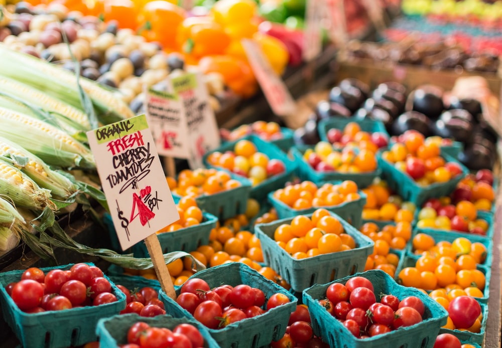
येरवडाच्या शेतकर्याची बाजारपेठ दर बुधवारी संध्याकाळी वॉटर पंप स्टेशन जवळ ठेवली जाते. या शेतकर्याच्या बाजारपेठेत ताजी फळे, भाज्या, लोखंडी भांडी, धान्य आणि बरेच काही आहे. या बाजारासाठीसुद्धा आपण आपल्या स्वत: च्या पिशव्या घेऊन जाण्याचा सल्ला दिला आहे.
कारेन आनंदची शेतकरी बाजार
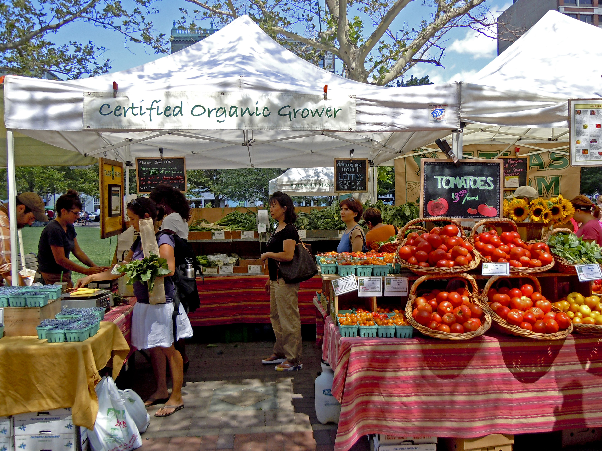
कदाचित शहराच्या प्रसिद्ध पिसू बाजांपैकी एक म्हणून, कॅरेन आनंद हा एक अतिशय अनोखा आणि सुपर मस्त शेतकरी बाजार आहे. आनंदची शेतकर्यांची बाजारपेठ केवळ शाकाहारी आणि फळांसाठीच स्टॉल होस्ट करण्यासाठी नाही तर स्थानिक कला, फॅब्रिक्स, सजावट तुकडे आणि बरेच काही यासाठी ओळखले जाते. ते खरोखरच असे स्थान आहे जेथे आपण अन्न आणि इतर सामग्री देखील एक्सप्लोर करू शकता.
बॅनर फार्मर्स मार्केट
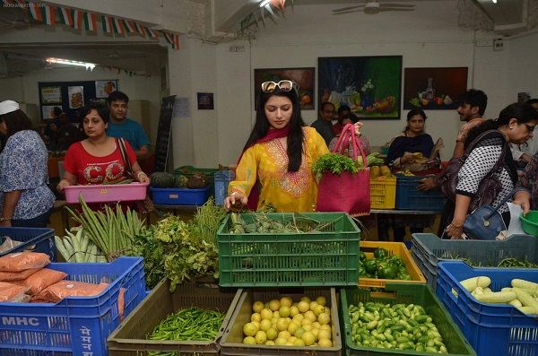
बाणेर-पाशान दुवा रोडवर दर गुरुवारी या शेतकर्याची बाजारपेठ आयोजित केली जाते. या बाजारपेठेतील शेतकर्यांना वेगवेगळ्या भाज्या व फळांसाठीसुद्धा वेगवेगळे स्टॉल्स आणि विभाग आहेत. या बाजारपेठांमध्ये व्यापारी देखील असतात जे कधीकधी ग्रामीण स्त्रिया बनवलेल्या कपड्यांच्या पिशव्या विकतात. त्यांच्याकडे होमपेड पापड, कुरडे, फ्रिम्स, मसाले, वेगवेगळे लोणचे आणि इतर अनेक वस्तूंची विक्री करणारे स्टॉल्स आहेत.
कारेन आनंदची शेतकरी बाजार
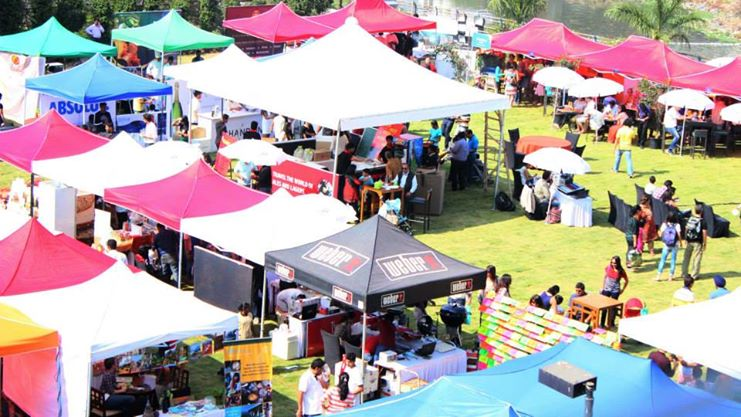
कदाचित शहराच्या प्रसिद्ध पिसू बाजांपैकी एक म्हणून, कॅरेन आनंद हा एक अतिशय अनोखा आणि सुपर मस्त शेतकरी बाजार आहे. आनंदची शेतकर्यांची बाजारपेठ केवळ शाकाहारी आणि फळांसाठीच स्टॉल होस्ट करण्यासाठी नाही तर स्थानिक कला, फॅब्रिक्स, सजावट तुकडे आणि बरेच काही यासाठी ओळखले जाते. ते खरोखरच असे स्थान आहे जेथे आपण अन्न आणि इतर सामग्री देखील एक्सप्लोर करू शकता.
मुंबईतील शेतकरी बाजारपेठा
कविता मुखी यांचे वांद्रे शेतकरी ’बाजार
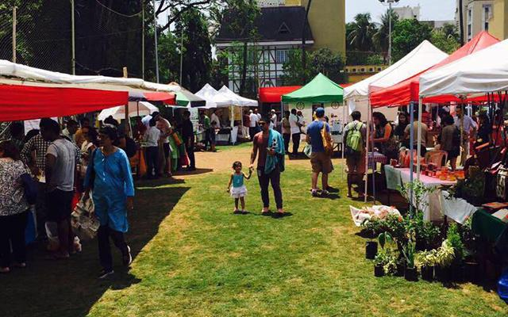
कविता मुखी यांचे शेतकर्यांचे बाजार हे कदाचित शहरातील सर्वात प्राचीन आहे. शहरातील एकमेव इकोकार्ट प्रमाणित 100% सेंद्रीय बाजारपेठ देखील आहे. येथे, आपल्याला स्थानिक शेतकरी स्वदेशी भाज्या विकत घेतील, सेंद्रिय कॅफे ब्रंच मेनू, पाय व खांदाची मालिश, थेट संगीत आणि सर्व प्रकारच्या सेंद्रिय उत्पादनांची विक्री करणारे स्टॉल्स देतील. दिवसभरात कार्यशाळा आणि संवाद देखील असतात.
कधी:
दर रविवारी; सकाळी 10 ते दुपारी 3कोठे:
डी'मोंटे पार्क, वांद्रे पश्चिमनरिमन पॉईंट व वाशीतील शेतकर्यांचे बाजार
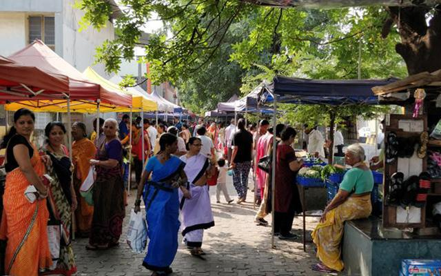
महाराष्ट्र राज्य कृषी उत्पन्न विपणन मंडळाने साप्ताहिक बाजारपेठ सेट अप केली आहे जिथे आपल्याला नियमितपणे भाजीपाल्याच्या दुकानात साठा नसलेली अशी काही देशी उत्पादन सापडेल. सर्व उत्पादन सेंद्रिय नसले तरी, मध्यस्थ कापून शेतक farmers्यांना त्यांच्या उत्पादनासाठी अधिक नफा द्यावा ही कल्पना आहे. शेंगामध्ये मोगरी आणि मॉरिंगापासून मूत्रपिंडाच्या ताज्या पर्यंत, आपल्याला येथे मनः-उडवून देणारी विविधता आढळेल.
कधी:
दर रविवारी सकाळी - ते दुपारी 3 वाजता नरिमन पॉईंटमध्ये; दर रविवारी, दुपारी 3 - संध्याकाळी 7 वाजता वाशीकोठे:
नरिमन पॉईंट - विधान भवन, मंत्रालय, नरिमन पॉईंट; नवी मुंबई - सेक्रेड हार्ट स्कूल, सेक्टर,, वाशीजुहू सेंद्रिय शेतकरी ’बाजार
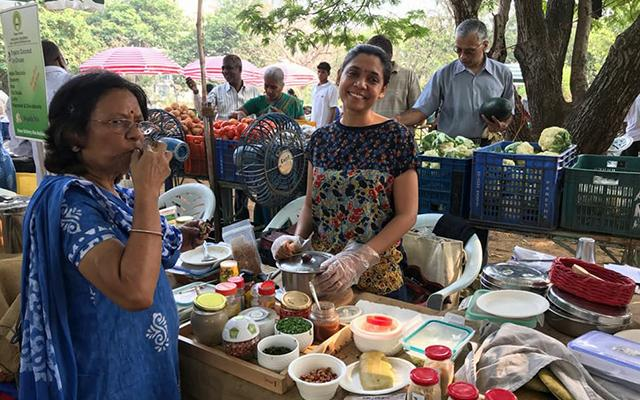
जुहू फार्मर्स ’मार्केट ही इनर व्हील क्लब ऑफ बॉम्बे वेस्ट, निसर्ग ग्राम आणि शरण यांच्यात एक संघटना आहे. बाजारपेठ सेंद्रिय उत्पादनाची वाढ करणा farmers्या शेतक package्यांना तसेच सेंद्रिय पॅकेक्ड उत्पादने तयार करणार्या छोट्या व्यवसायांना प्रोत्साहन देते. शेतात ताजे उत्पादन विकण्यासाठी मुंबईच्या आसपासचे शेतकरी सहकार येथे येतात. भाज्या आणि फळांव्यतिरिक्त आपल्याला येथे सेंद्रिय त्वचा देखभाल उत्पादने देखील आढळतील.
कधी:
दर रविवारी सकाळी 10.30 ते दुपारी 1 वाकोठे:
पुष्पा नर्सि पार्क, सोहम स्पाच्या समोर, जुहूउत्तम फूड्स फार्मर्सचे बाजार - कफ परेड आणि वर्सोवा
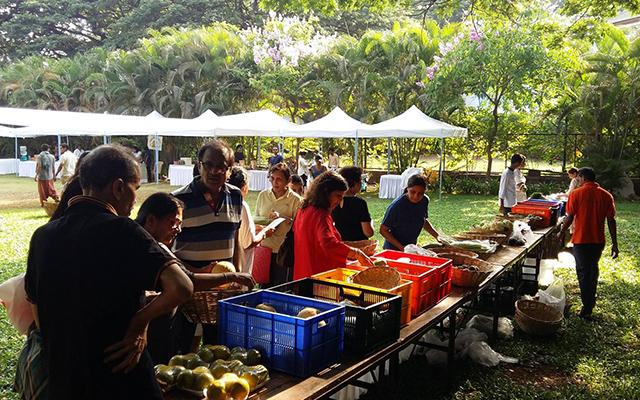
बेटर फूड्सच्या पुढाकाराने कफ परेड आणि वर्सोवा येथील शेतकर्यांच्या बाजारपेठेमध्ये ताजी शेतीमाल, निरोगी पेये, स्वच्छ स्नॅक्स आणि चवदार आहार देण्यात आला आहे. हे छताखाली लहान आणि सीमांत शेतकरी आणि उद्योजक आणते. त्यांच्याकडे बर्याच कार्यशाळा होस्ट करतात, ज्याच्या थीम दर आठवड्यात बदलतात. घरी मायक्रोग्रिन वाढण्यास शिकण्यापासून विषय भिन्न असू शकतात.
कधी:
दर रविवारी सकाळी 8 - दुपारी 1 वाजता कफ परेडमध्ये; सकाळी 11 - दुपारी 3 वाजता वर्सोवामध्येकोठे:
कफ परेड - पार्किंग लॉट ऑफ मेकर आर्केड, मेकर आर्केड, कफ परेड वर्सोवा - लिटल हाऊस यारी आरडी, यज्ञ नगर, वर्सोवा, अंधेरी वेस्टजगातील 11 सर्वोत्कृष्ट शेतकरी बाजारपेठा
1. युनियन स्क्वेअर ग्रीनमार्केट, न्यूयॉर्क, न्यूयॉर्क
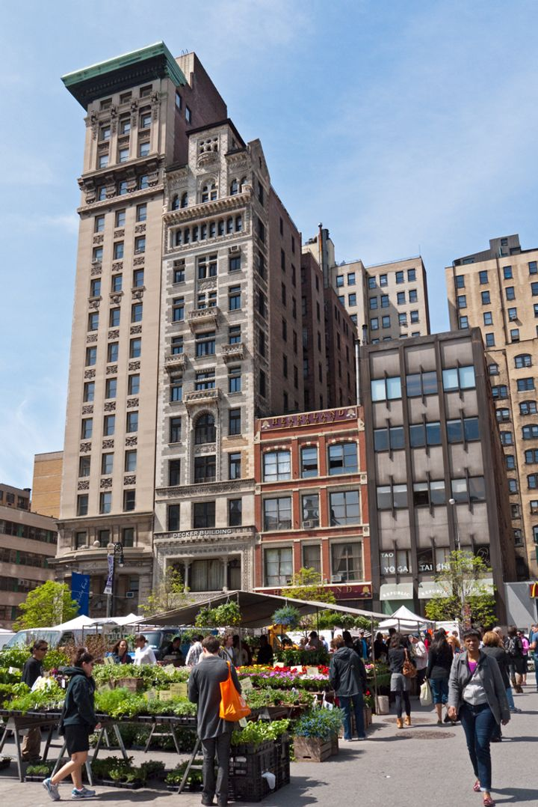
न्यूयॉर्कमधील सर्वात मोठे बाजार दररोज स्थानिक दुकानदार, शेफ आणि पर्यटकांच्या मिश्रणाने दररोज .०,००० अभ्यागतांना आकर्षित करते, जे लोक ताजी उत्पादन आणि स्थानिक वस्तूंच्या चवसाठी उत्सुक असतात.
2. आझादपूर घाऊक बाजार, दिल्ली, भारत
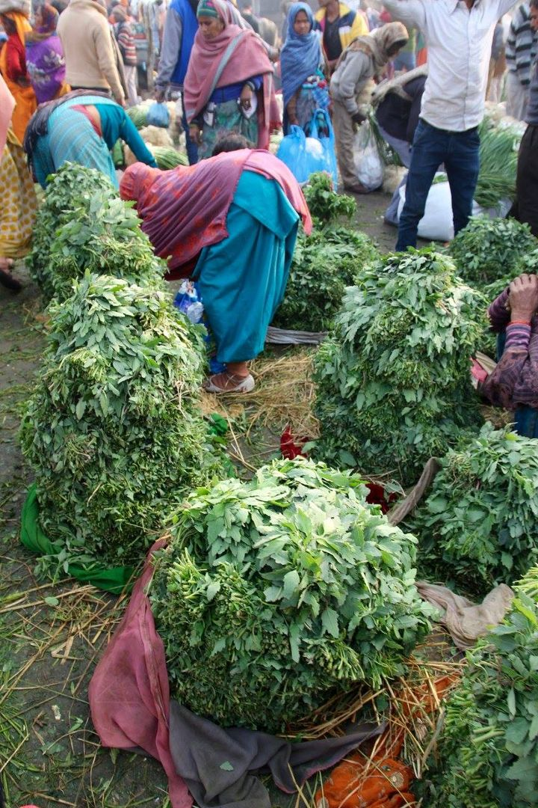
आशिया खंडातील सर्वात मोठी घाऊक फळ आणि भाजीपाला बाजार हे भारताच्या राजधानीच्या 46 एकर क्षेत्रावर आहे.
3. क्लांग टोए फ्रेश मार्केट, बँकॉक, थायलंड
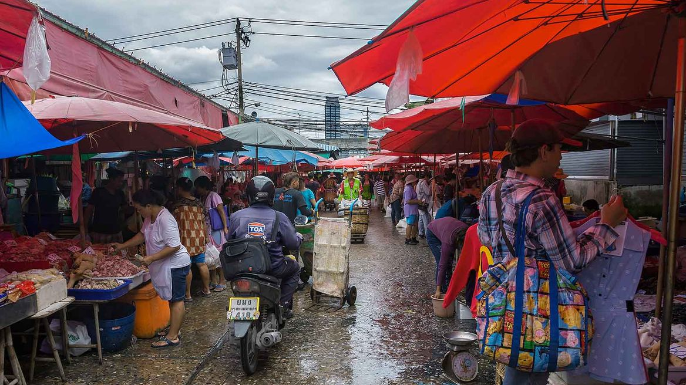
बँकॉकची सर्वात मोठी ताजी बाजारपेठ हे थायलंडच्या राजधानीच्या आतील बाजूस असलेल्या स्वतःच्या छोट्या शहरासारखे आहे.
4. कौपटोरी मार्केट, हेलसिंकी, फिनलँड
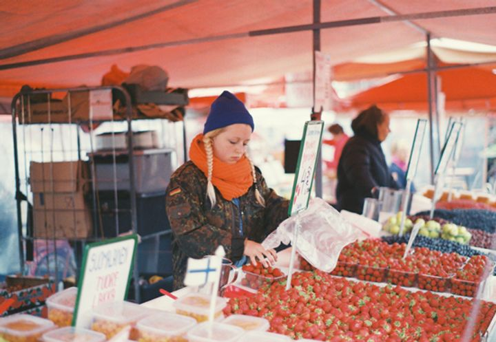
हेलसिंकीच्या दक्षिण हार्बरमध्ये स्थित, ही मैदानी बाजारपेठ ताजी उत्पादन, मशरूम, मासे, स्मोक्ड रेनडियर (सॉरी, रुडोल्फ), तसेच हॉट स्ट्रीट फूड आणि स्थानिक हस्तकलेसह अभिमान बाळगते.
5. ला बॉक्वेरिया मार्केट, बार्सिलोना, स्पेन
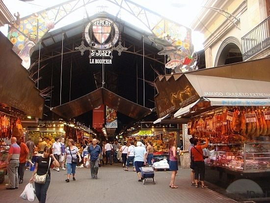
बार्सिलोना मधील हे ऐतिहासिक अंतर्गत बाजारपेठ 1200 चे दशकातील आहे आणि काही उत्कृष्ट कॅटलान उत्पादनांचे प्रदर्शन करते.
6. प्लाझा डी मर्काडो दि पालोकेमाओ, बोगोटा, कोलंबिया
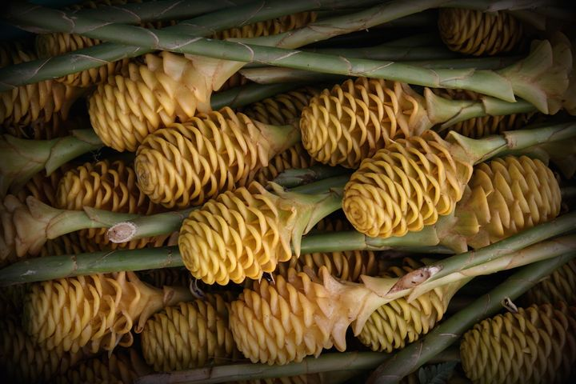
कोलंबियाची राजधानी शहराची बाजारपेठ स्थानिक फळ, फुले, सीफूड आणि बरेच काही च्या रंगांनी फुटत आहे.
7. काश्गर संडे मार्केट, चीन
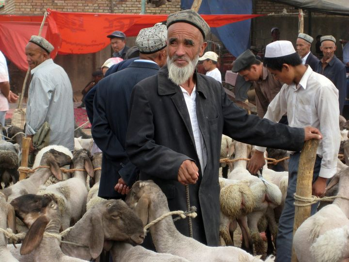
ही भरभराट झालेली दूरस्थ बाजारपेठ काराकोरम आणि पमीर पर्वतांच्या मागे लपलेली आहे, पण एकेकाळी हा रेशीम मार्गाचा मध्यवर्ती व्यापार होता आणि रोमन काळापासूनचा होता.
8. फेरी प्लाझा फार्मर्स मार्केट, सॅन फ्रान्सिस्को, कॅलिफोर्निया
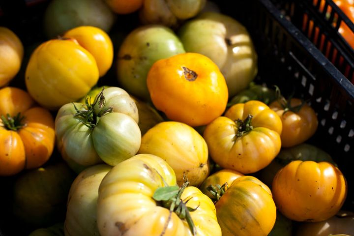
हे प्रमाणित शेतकरी बाजारपेठ स्थानिक उत्पादनांसह एकत्र येत आहे जे प्रत्येक आठवड्यात 25,000 स्थानिक, अभ्यागत आणि शेफ दर्शविते.
9. मार्च- बॅस्टिल, पॅरिस, फ्रान्स
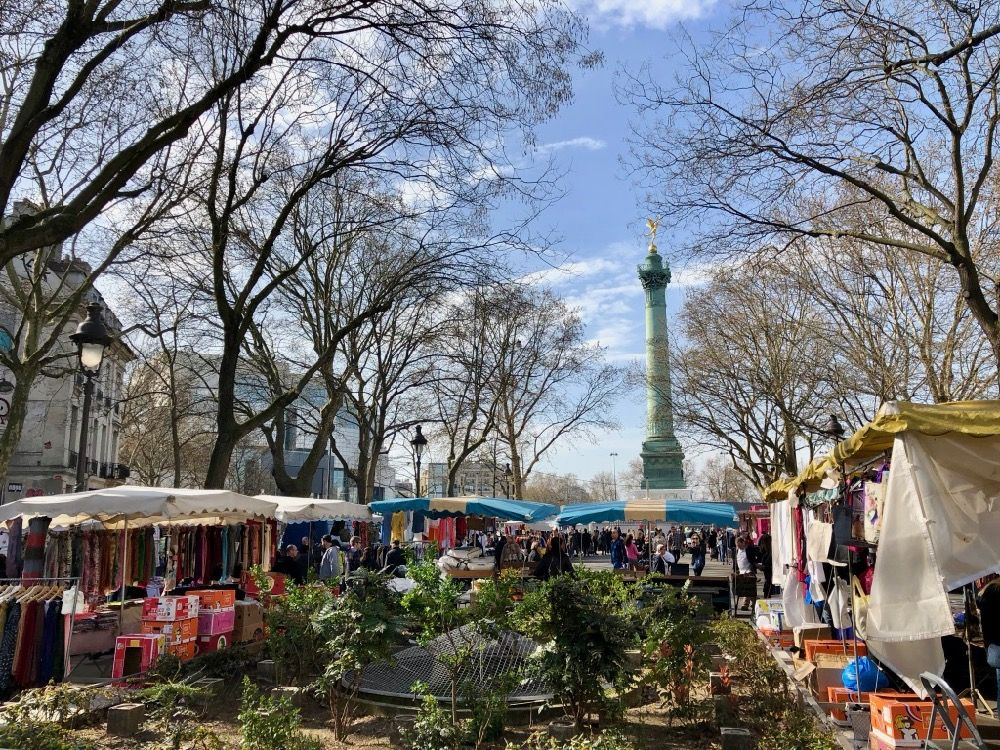
पॅरिसमध्ये असताना, सुस्त उत्पादन, चीज, मशरूम आणि खाद्य उत्पादनांनी भरलेल्या या हलगर्जी बाजारास गमावू नका. कोप around्याच्या आसपासच्या प्लेस डेस व्हॉजेस पार्क येथे जवळच्या बॅस्टिल स्मारकाखाली ताज्या फळांचा नाश्ता किंवा आपल्या वस्तूंवर मेजवानी.
10. रियाल्टो मार्केट, व्हेनिस, इटली
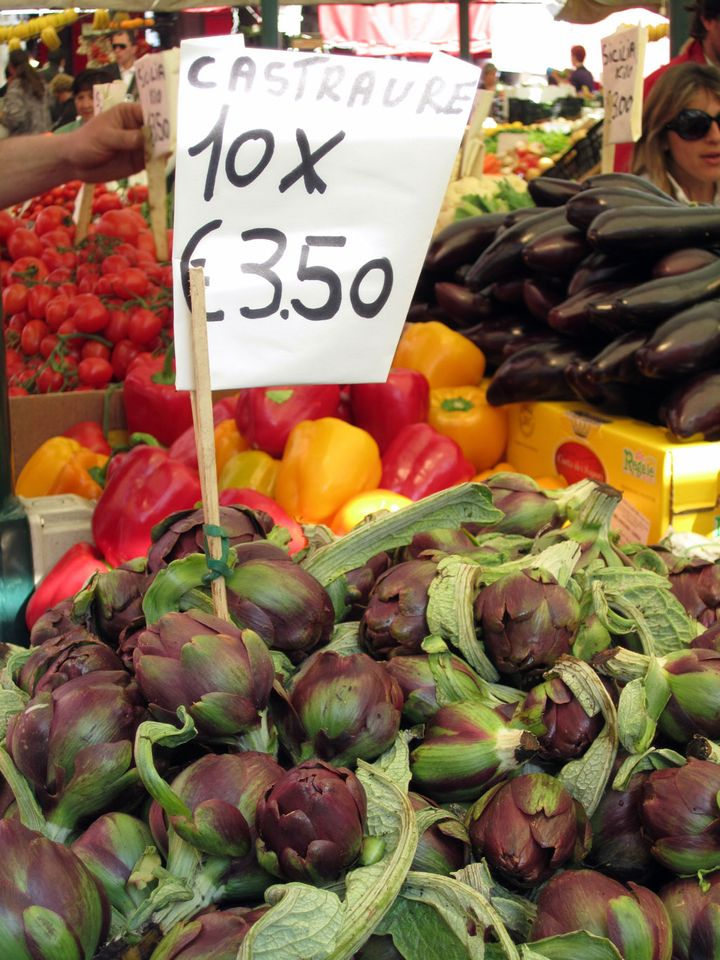
व्हेनिसमधील ही मासे आणि भाजीपाला बाजार आपल्या लोकसंख्येसाठी आणि दरवर्षी लाखो पर्यटकांना आकर्षित करतो. इशारा: बाळांच्या आर्टिकोकससाठी प्रयत्न करा.
11. बरो मार्केट, लंडन, युनायटेड किंगडम
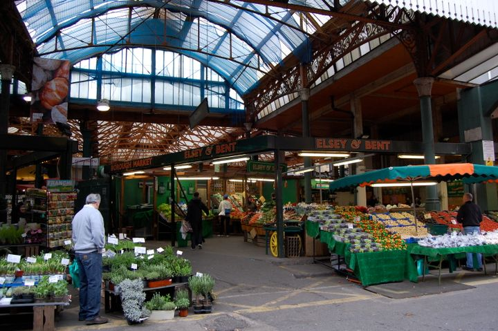
लंडनची सर्वात जुनी अन्न बाजारपेठ १,००० वर्षांपूर्वीची आहे परंतु अद्याप शेतकरी, मच्छीमार, बेकर, खाद्य उत्पादक आणि खरेदीदार यांचे भरभराटीचे केंद्र आहे.
📞 संपर्क साधा
वैशिष्ट्यीकृत पोस्ट

कृषी सुविधांमध्ये संपूर्ण होल्डिंगपासून ते आस्थापनांपर्यंतच्या सुविधांचा समावेश आहे.

खरंच, शतकानुशतकाच्या सर्वात मोठ्या शेतीच्या विस्ताराच्या शेवटी, शेतक of्याची कोंडी ही एक मोठी समस्या बनली होती.

शेतात, आयओटी शेतातील डिव्हाइसवर सर्व प्रकारचे डेटा दूरस्थपणे मोजण्याची आणि वास्तविक वेळेत ही माहिती शेतक to्यास पुरविण्याची परवानगी देते.

शेती हा भारताच्या अर्थव्यवस्थेचा उल्लेखनीय भाग आहे, कारण त्यामध्ये संपूर्ण जीडीपीच्या 18 टक्के वाढ होते.

आपल्याला जे करायला आवडते ते करा आणि आपल्याला स्मित करा.